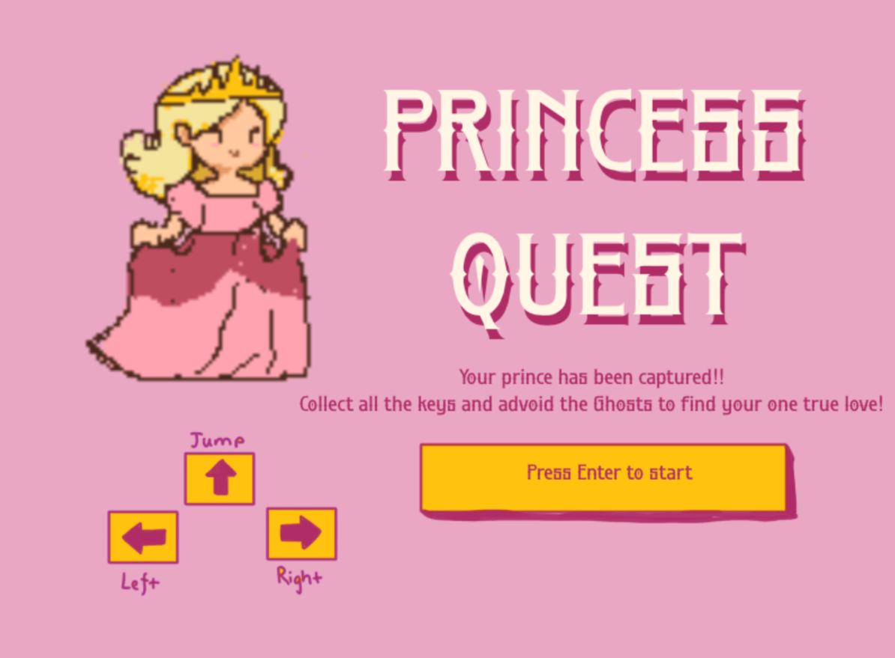
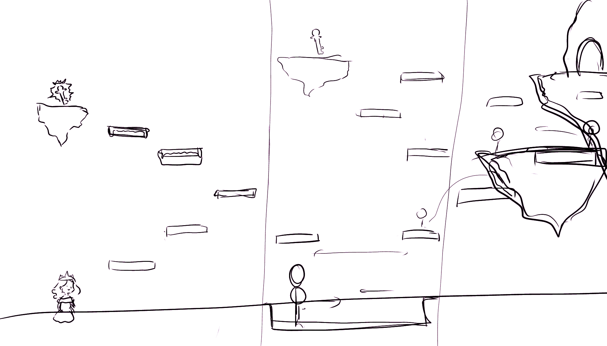
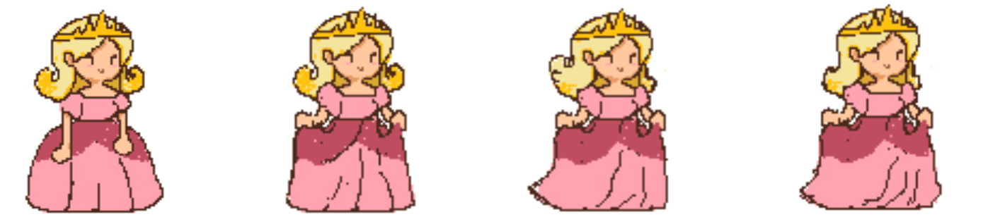
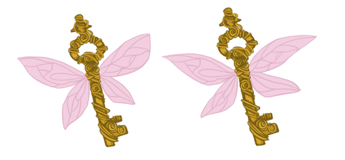
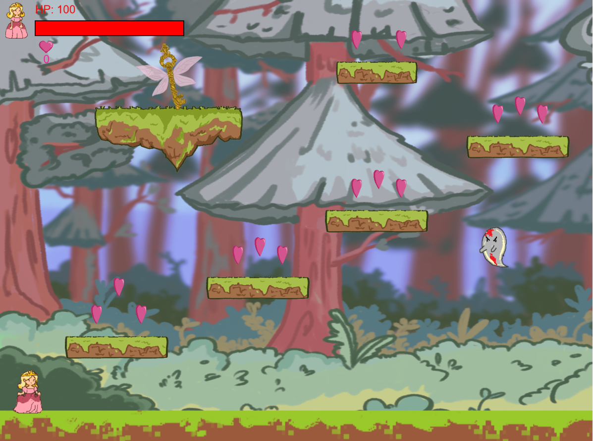
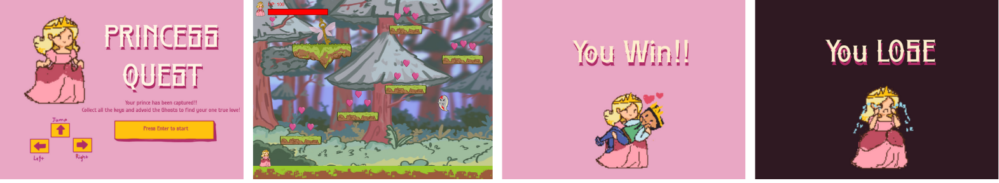

Princess Quest
2D Pixel Platformer Game

Project Type: Solo Project
Date: July 2024 – August 2024 (1 month)
Tools Used: p5.js, Photoshop, Canva
Skills: JavaScript programming, platformer mechanics, pixel art, animation, collision detection
Role: Game Designer, Developer & Artist
Project Overview
Princess Quest is a nostalgic 2D platformer built with p5.js for an IAT 167 course. It challenges players to guide a princess through haunted pixel art environments, overcoming ghost enemies and collecting keys and hearts to advance through levels. I was responsible for all aspects of visual design and programming, combining creative storytelling with technical game mechanics.
Design Process & Visual Development

The project began with outlining core gameplay mechanics and visual style. I mapped out platform types (solid, moving, disappearing), enemy behavior, and collectible items through sketches to establish a clear game flow before implementation.
Character & Item Sketches


Gameplay Screenshots

Final Scene

Key Features & Technical Highlights
Pixel Art & Animation
I created all game sprites and animations using a custom pixel art palette, inspired by SNES-era platformers but personalized with unique walk cycles, jump states, and idle animations for the princess.
Game Mechanics & Programming
Built in p5.js, the game features gravity physics, jump mechanics, collision detection, and enemy AI with preset or random movement patterns. I modularized code to ensure ease of debugging and future scalability.
Audio & Atmosphere
Dynamic day/night background changes and layered ambient sounds enhance immersion. Sound effects for jumps, ghost encounters, and success events reinforce feedback loops.
Challenges & Solutions
Collision Bugs
Initial player collision issues, such as sticking to platform edges or falling through, were fixed by refining bounding box checks and manually adjusting player positioning on overlap.
Layering & Visual Depth
I carefully sorted drawing order for backgrounds, enemies, and player sprites to maintain clarity and proper visual hierarchy.
Sound Playback
To prevent sound effect overload, I implemented throttling and preloading techniques for smooth, lag-free audio.
Project Outcome
Princess Quest was a successful solo project that strengthened my abilities in game design, pixel art, and programming. The final product received positive feedback for its polished gameplay and engaging visual style.
Key Takeaways
- Balancing mechanics with expressive visuals deepens player engagement.
- Thoughtful pixel art animation conveys character and personality effectively.
- Modular, testable code facilitates maintenance and expansion.
- Audio and visual feedback are critical for player satisfaction in platformers.
Playable Demo
Try the playable demo of Princess Quest below, or open it in a new tab.